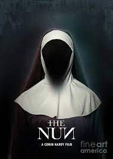
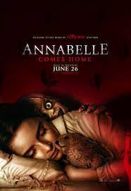

SPOTSTAR - HORROR
English horror movies have a rich tradition of blending atmosphere, suspense, and psychological depth. They often rely more on mood and storytelling than on jump scares or gore. The roots of English horror can be traced back to the classic Hammer Films of the 1950s and 60s, which gave new life to gothic tales like Dracula and Frankenstein. These films were known for their eerie settings, dramatic lighting, and iconic performances. Modern English horror continues this legacy with a focus on unsettling themes and slow-building tension. Films like The Others and The Woman in Black use haunted houses and ghostly figures to create a chilling experience. Directors often explore themes like isolation, grief, and madness, grounding the horror in human emotion. The genre also thrives on folklore and rural myths, adding a distinctly British flavor. More recent entries like The Descent and Eden Lake have pushed the boundaries with intense and visceral storytelling. English horror often leaves a lingering sense of dread rather than immediate terror. The blend of classic elements and contemporary fear makes it unique in the horror genre. With its strong storytelling and atmospheric style, English horror continues to captivate audiences around the world.
POPULAR FILMS



